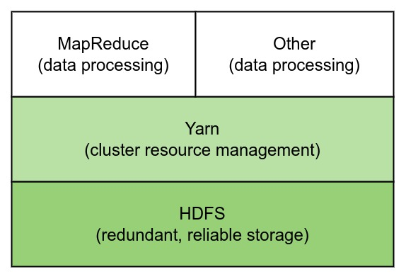

Ch01-Hadoop 介绍
March 15, 2018
2012 年社区发布了 Hadoop 2.0-alpha，自此 Hadoop 开启了 2.0 时代，相比较与 1.0 引入了 Yarn，NameNode HA 等重要组件和功能。随后数年 Hadoop 1.0 也慢慢的退出了历史舞台，所以这里也仅仅讲述 Hadoop 2.0 相关。
广义上来说 Hadoop ≈ 大数据，于是不少博文中在写 Hadoop 的过程中还会出现 Spark，Hive 等其他组件的介绍。个人并不是非常认同这种分类方式，Hadoop 只是大数据技术中的一个小小的处理工具/软件而已，作为一个软件应该有专属于自己的说明内容，在说明自己专属内容的时候再掺杂其他的软件说明是不妥的。
1. 基本信息 #
| 条目 | 说明 |
|---|---|
| 官网 | https://hadoop.apache.org/ |
| 下载地址 | https://hadoop.apache.org/releases.html |
2. 架构介绍 #
Hadoop 由三个部分组成，分别是 HDFS，Yarn，MapReduce。HDFS 提供存储功能，Yarn 提供调度功能，MapReduce 提供计算框架。 用不准确的表述将所有的功能串起来大概是 Yarn 调度使用 MapReduce 计算框架读取并计算存储在 HDFS 上的数据，最终又重新将计算结果写入到 HDFS 中。
